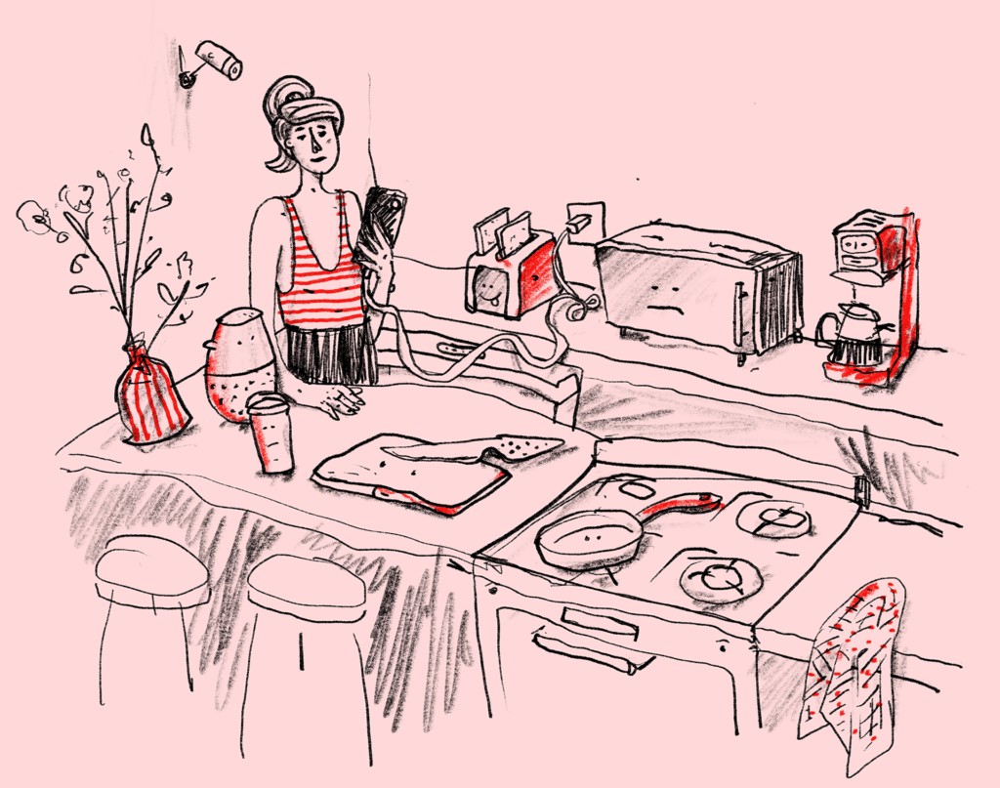

Hey Honey (essay):
A speculative domestic techno-culture parody about kitchen devices who love to gossip Hey Honey is an essay by Klasien van de Zandschulp that invites us to slip into the space of the kitchen, and listen to the voices behind our backs, in a language beyond human grasp. Taking kitchenware as a point of departure and combining fictional dialogues, historical references and critical thoughts, Klasien raises awareness on the way in which machinic communications have permeated our daily life. Hey Honey is a playful, yet urgent call to speculate on the often overlooked outcomes propelled by our increasingly hyperconnected world.

Hey Honey is part of the festival "A Matter of (In)digestions, Amsterdam - 2020
About the artist
Klasien van de Zandschulp designs story-based and participatory experiences, blending digital/physical and online/offline interactions. Her work explores sensory design, embodiment, rituals, augmented realities, human interaction and (radical) thoughts around our daily technology consumption. Van de Zandschulp is fellow at the Institute of Network Cultures (NL, 2020), the Sundance New Frontier Story Lab (USA, 2019) and guest researcher at the Artez Future Makers Insitute - (NL, 2018, 2019).